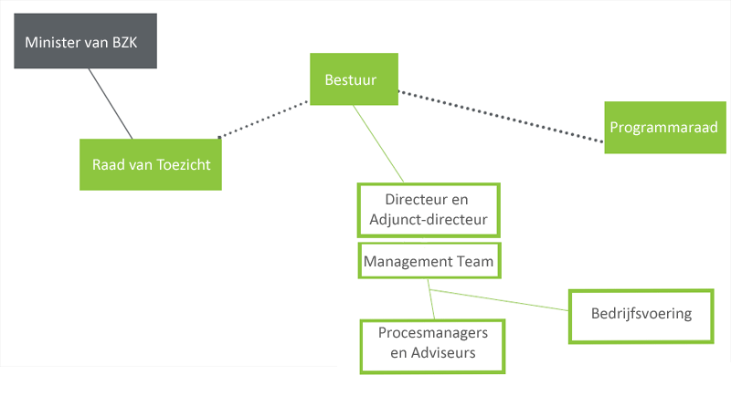
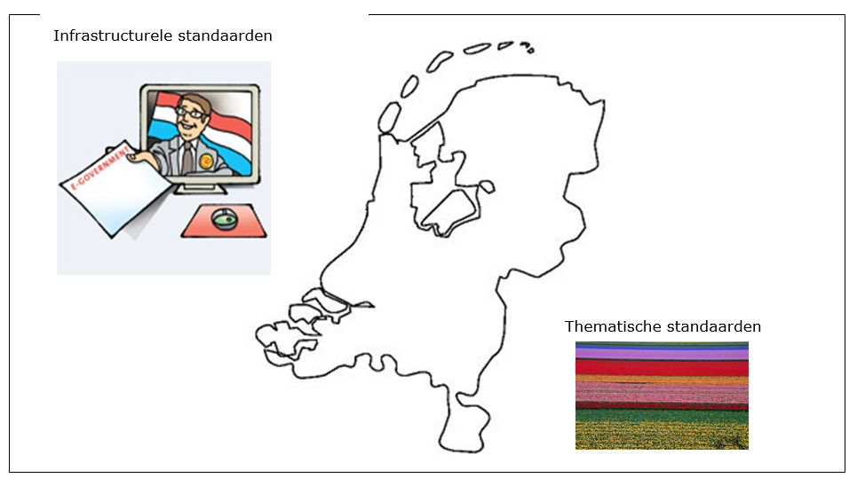
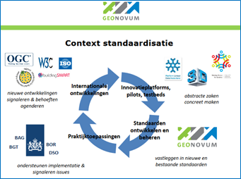
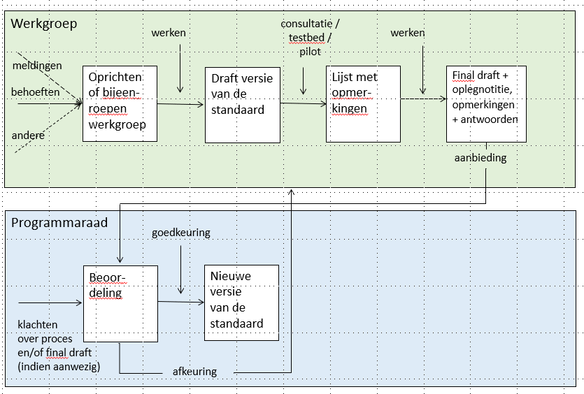

Creative Commons Attribution 4.0 International Public License (CC-BY)
Samenvatting
Status van dit document
Deze paragraaf beschrijft de status van dit document ten tijde van publicatie. Het is mogelijk dat er actuelere versies van dit document bestaan. Een lijst van Geonovum publicaties en de laatste gepubliceerde versie van dit document zijn te vinden op https://www.geonovum.nl/geo-standaarden/alle-standaarden.
Dit is de definitieve versie van de beheerdocumentatie. Wijzigingen naar aanleiding van consultaties zijn doorgevoerd.
Versiebeheer
Dit document is aan verandering onderhevig. Het versiebeheer van het document geeft inzicht in wijzigen en de actualiteit ervan.
Versie
Datum
Status
Bewerking
Toelichting
1.0
jul-10
Vervallen
Oplevering voor publicatie
1.1
mei-11
Vervallen
Op basis van evaluatie zijn aanpassingen doorgevoerd
1.2
1-sep-14
Vervallen
Actualisatie van het beheerdocument.
1.2.1
22-sep-14
Vervallen
Paragraaf 3.5 extra toelichting op rechtenbeleid.Versiebeheer overzicht geactualiseerd.
30-jul-15
Publicatie via Geonovum website.
1.3
9-feb-17
Werkversie
-Controle en actualiseren voetnoten verwijzingen naar websites;
-Verwijzingen College/ Forum Standaardisatie geactualiseerd;-Roadmap heeft sinds 2017 een nieuwe naam: standaardenagenda;
-Paragraaf Governance verantwoordelijken en taken programmaraad geduid, aanvullend op de procedurele activiteiten beschreven in de rest van het document;
-Paragraaf internationale standaarden geactualiseerd;
-Paragraaf Raamwerk geactualiseerd;
-Paragraaf NORA aangevuld;
-Paragraaf Wijzigingsbeheer beschrijving status melding in lijn gebracht met ons meldingensysteem.
-Vastgestelde versie door Programmaraad.
13-mrt-17
Definitief
1.3.1
28-mei-20
Werkversie
-Actualiseren op licentie (4.0 ipv 3.0 Creative Commons)
-Toevoegen GeoPackage aan set Geostandaarden t.g.v. besluitvorming Forum Standaardisatie
-Correctie in naamgeving (o.a. Ministerie IenM vervangen door BZK, EZ als subsidieverstrekker nu vervangen door LNV)
-Releasebeleid geactualiseerd n.a.v. vaststelling wijzigingsprotocol in Programmaraad 2 juli 2019 (update paragrafen Wijzigingsprotocol, versiebeheer, toevoeging pragraaf Procesvarianten)
18-aug-21
Definitief
1. Inleiding
In Nederland ontwikkelt en beheert Geonovum de basis geo-standaarden. Mensen die in de praktijk gebruik maken van deze standaarden hebben vragen over de toepassing ervan, willen weten welke ontwikkelingen er spelen en hebben mogelijk suggesties voor aanpassingen van deze standaarden. In dit document worden de verschillende beheeraspecten beschreven zoals implementatieondersteuning, wijzigingsproces, governance, etc. zodat iedere organisatie die de basis geo-standaarden gebruikt hun weg weten te vinden in de geo-standaarden.
1.1 Standaarden voor geo-informatie
Geonovum maakt geo-informatie van de publieke sector toegankelijk en ontwikkelt en beheert de
standaarden die daarvoor nodig zijn. Een bepaalde set van deze geo-standaarden vormt de algemene basis die nodig is voor een goedwerkende gemeenschappelijke geo-informatie infrastructuur. Deze set noemen wij de basis geo-standaarden en is onderwerp van dit document.
De basis geo-standaarden kunnen worden onderverdeeld in:
standaarden voor het beschrijven van geo-informatie, waaronder informatiemodellen en standaarden voor metadata, uitwisseling en coördinaatreferentiesystemen. Met deze standaarden wordt de geo-informatie (data) zelf beschreven;
standaarden voor services, waaronder die voor het serveren van vector-, raster- en sensordata. Met deze standaarden wordt beschreven hoe de data geserveerd wordt.
Onder standaarden worden hier niet verstaan praktijkrichtlijnen, werkafspraken, handreikingen of andersoortige publicaties over de geo-standaarden. Deze publicaties gaan in op de toepassing van de standaarden in de praktijk, de standaarden beschrijven de vereisten.
Met behulp van het beheer- en ontwikkelmodel voor open standaarden BOMOS geeft Geonovum het beheer en de verdere ontwikkeling van de basis geo-standaarden structureel vorm. Zo geven wij de gebruikers van de basis geo-standaarden, onze relaties en onszelf inzicht in hoe het beheer van deze standaarden is ingericht.
1.2 Leeswijzer
Na deze inleiding leest u in Hoofdstuk 2 de strategie voor het beheer van de basis geo-standaarden: de governance, onze visie en de financiën voor het beheer van deze standaarden. Hoofdstuk 3 gaat in op de tactiek van het beheer. De architectuur van de standaarden is de basis voor toekomstige ontwikkelingen die met behulp van de standaardenagenda inzichtelijk worden gemaakt voor de gemeenschap. Wat Geonovum doet om adoptie en erkenning van standaarden te bewerkstelligen is ook in dit hoofdstuk beschreven. De praktische kant hiervan is in Hoofdstuk 4 uitgewerkt. In Hoofdstuk 5 komt vervolgens de implementatieondersteuning aan bod. Hoe geeft Geonovum als beheerder advies en opleiding over de geo-standaarden en waar kan men terecht met vragen? Het toetsen van de data aan de standaarden kan met behulp van een Validator. Hoofdstuk 6 geeft tot slot inzicht in de communicatie over de basis geo-standaarden.
2. Strategie
Governance, visie en financiën zijn onderdelen van de strategie voor het beheer van de basis geo-standaarden.
2.1 Governance
Geonovum is een overheidsstichting met een onafhankelijk bestuur, een Raad van Toezicht en een programmaraad. De minister van BZK benoemt de leden van onze Raad van Toezicht. Onze missie, doelen, taken en jaarlijkse uitvoeringsplan staan op onze website .
De programmaraad adviseert het bestuur over de inhoud en prioriteiten voor het basisprogramma en over onze andere werkzaamheden. Voor het basisprogramma, het beheer van de geo-standaarden, treedt de programmaraad op als stuurgroep. De programmaraad beoordeelt en beslist over deze wijzigingsvoorstellen en stelt een nieuwe (versie) van de standaard vast van geo-standaarden die bij Geonovum in beheer zijn. Ook is de programmaraad aanspreekpunt voor klachten over het beheer van de standaarden door Geonovum. De programmaraad bestaat uit vertegenwoordigers van publieke organisaties in het geo-werkveld. Zij zijn de voornaamste belanghebbenden van Geonovum.

De overheid beter laten presteren met geo-informatie. Dat is waar Geonovum dagelijks aan werkt. We doen dat door de uitwisseling van geo-informatie onderling en met andere soorten gegevens mogelijk te maken met standaarden. De ontwikkeling en beheer van de geo-standaarden is een basistaak van Geonovum en is belegd in ons basisprogramma. Jaarlijks adviseert de programmaraad aan het bestuur bindend over de inhoud van het basisprogramma. De Raad van Toezicht keurt het uitvoeringsplan, waarin het basisprogramma is opgenomen, goed voordat het bestuur het uitvoeringsplan vaststelt. Eenmaal per kwartaal rapporteert Geonovum aan de programmaraad en het bestuur over de voortgang in het basisprogramma.
Samenwerking met andere standaardisatieorganisaties is onderdeel van de governance (zie paragraaf (zie paragraaf Internationale, Europese en nationale geo-standaardisatiegemeenschap en paragraaf Samenwerking met andere beheerorganisaties).
Mocht de beheertaak van Geonovum voor de basis geo-standaarden vervallen, dan zullen de intellectuele eigendomsrechten overgaan naar de nieuwe beheerder of bij gebrek daaraan aan het ministerie van Binnenlandse Zaken en Koninkrijksrelaties.
2.2 Visie
Dit is onze visie op het beheer van de basis geo-standaarden. Een standaard die niet in beheer is, is geen standaard. De standaarden die Geonovum in beheer heeft, zijn ingebed in nationale en internationale standaarden. Geonovum voert het beheer transparant uit in samenwerking met belanghebbende partijen.
2.3 Financiën
Het beheer van de basis geo-standaarden is onderdeel van ons basisprogramma. Dit programma wordt gesubsidieerd door ministeries van Binnenlandse Zaken en Koninkrijksrelaties en Landbouw, Natuur en Voedselveiligheid, van het Kadaster en van de Geologische Dienst Nederland TNO. Jaarlijks wordt bepaald welk deel van de basisfinanciering besteed wordt aan het standaardisatiewerk en daarmee het beheer van de basis geo-standaarden. Over de besteding van de basisfinanciering leggen wij verantwoording af aan onze subsidieverleners en via het jaarverslag, inclusief jaarrekening voorzien van een goedkeurende accountantsverklaring.
3. Tactiek
Iedereen die de basis geo-standaarden gebruikt, ongeacht waarom, willen wij voorzien van de juiste en actuele standaarden en van informatie over de toepassing ervan. Dit hoofdstuk beschrijft hoe wij de basis geo-standaarden ontwikkelen en op welke wijze beschikbaar stellen.
3.1 Architectuur
Architectuur richt zich op de samenhang tussen de standaarden onderling en op het uitzetten en toetsen van de inhoudelijke lijnen van de standaarden. Daarbij is het van belang de samenhang te bewaken tussen de inhoudelijke producten van het geo-werkveld en die van buiten het werkveld, zoals standaarden in aangrenzende domeinen. Overlap wordt hierdoor voorkomen. Bijzondere aandacht verdient de relatie met de internationale standaardisatiegemeenschap.
3.1.1 Internationale Europese en nationale geo-standaardisatiegemeenschap
Belangrijk uitgangspunt van Geonovum bij standaardisatie is de afstemming met internationale ontwikkelingen. Ontwikkelingen in standaarden op internationaal, Europees en nationaal niveau zijn van invloed op het beheer van de basis geo-standaarden. Geonovum zorgt ervoor dat nieuwe en veranderde internationale geo-standaarden, indien relevant en door Nederland ondersteund, geadopteerd en erkend worden in Nederland.
Op onze website staat een overzicht van standaardisatieorganisaties op nationaal, Europees en internationaal niveau. Wij zijn op deze drie niveaus actief en daardoor op de hoogte van relevante ontwikkelingen.
Geonovum behartigt de Nederlandse belangen voor geo-standaarden door actieve participatie binnen de internationale standaardisatiefora ISO/TC 211, OGC en W3C. Deze standaardisatie organisaties maken technische geo-standaarden die Nederland semantisch invult. Geonovum is tevens betrokken bij de Europese richtlijn INSPIRE.
Participatie bestaat onder andere uit deelname aan de werkgroepen, die standaarden ontwikkelen en aanpassen. Daarnaast volgen wij de ontwikkelingen bij OMG die zich bezighouden met standaarden voor het web en ICT. En op Europees niveau in CEN/TC 287.
Geonovum is ook lid van het Forum Standaardisatie zodat een goede inbreng van de geo-standaarden naar de digitale overheid en visa versa is geborgd. De voorbereidingen van de bijeenkomsten van ISO/TC 211 en CEN/TC 287 en stemmingen worden gedaan in de NEN normcommissie 351 240 Geo-informatie. Geonovum is voorzitter van deze normcommissie die bestaat uit een representatieve afvaardiging van Nederlandse belanghebbende organisaties.
3.1.2 Samenwerking met andere beheerorganisaties
Geonovum werkt samen met andere standaardisatieorganisaties als zij te maken hebben met geo-informatie en er wederzijds behoefte aan samenwerking is. Hierbij kan onderscheid gemaakt worden in twee groepen, namelijk infrastructurele en thematische standaarden en hun organisaties.
figuur Infrastructurele en thematische standaarden

3.1.3 Raamwerk van geo-standaarden
Om inzicht te geven in de veelheid van standaarden voor geo-informatie heeft Geonovum het Raamwerk van geo-standaarden opgesteld. Het Raamwerk benoemt de standaarden die voor Nederland binnen het geo-domein van toepassing zijn voor aansluiting met andere domeinen. Het sluit aan op de Europese infrastructuur en integreert het geo-domein met de elektronische overheid. Het Raamwerk geo-standaarden is een aanvulling op het NORA dossier geo-informatie) . Het is geschreven voor iedereen die betrokken is bij het toepassen van standaarden voor geo-informatie. Zoals informatiemanagers, stuurgroepleden, beleidsmedewerkers, projectleiders, adviseurs, architecten, IT-leveranciers, en voor personen die standaarden en specificaties implementeren in hun organisatie en willen kunnen integreren met andere organisaties in Nederland en Europa.
3.1.4 Nederlandse Overheid Referentie Architectuur - NORA
De Nederlandse Overheid Referentie Architectuur NORA geeft algemene architectuurprincipes voor domeinarchitecturen, zoals voor het Rijk (MARIJ), provincies (PETRA) en gemeenten (GEMMA). Geo-informatie wordt gezien als een aspect van architectuur. Dit betekent dat geo-informatie niet domeingericht is, maar voor iedereen geldig is of kan zijn. Om deze reden is geo-informatie integraal opgenomen in NORA vanaf versie 3.0. Forum Standaardisatie heeft NORA 3.0 in oktober 2010 goedgekeurd. Er is daarmee een aanvullend NORA dossier Geo-informatie beschikbaar gekomen. Het kennisplatform NORA online is uitgebreid, conform NORA 3.0, met het thema GEO.
3.2 Toekomstige ontwikkeling
Ontwikkelingen van de basis geo-standaarden in de toekomst maken wij inzichtelijk via de standaardenagenda en door transparant versiebeheer volgens wijzigingsprotocollen en wijzigingsbeheer.
3.2.1 Standaardenagenda
Met behulp van de standaardenagenda geven we inzicht in onze jaarlijkse werkzaamheden en activiteiten rondom de basis geo-standaarden. De standaardenagenda wordt jaarlijks vastgesteld door de programmaraad en gepubliceerd op de website van Geonovum. De standaardenagenda is een vertaling van requirements en ontwikkelingen vanuit het werkveld. Het werkpakket benoemd in de standaardenagenda is te herleiden naar de activiteiten voor ontwikkeling en beheer conform BOMOS.
figuur Introductieplaat standaardenagenda

3.2.2 Wijzigingsbeheer
Belanghebbenden kunnen meldingen (wijzigingsverzoeken), variërend van wensen tot aanpassing van en fouten in een basis geo-standaard, indienen bij Geonovum (Een voorbeeld van een meldingen overzicht voor de geo-standaard Metadata). Wij geven inzicht in de ontvangen meldingen en bundelen de verzoeken tot een wijzigingsvoorstel in het geval we een wijzigingsproces starten voor een nieuwe versie van de standaard. Het Wijzigingsprotocol) beschrijft het wijzigingsproces en daarmee ook de procedure die het wijzigingsvoorstel doorloopt. Via onze website geven wij per standaard een overzicht van de ingediende meldingen, met daarbij per melding de status. Zo is te volgen of een melding onderzocht wordt of meegenomen in het wijzigingsvoorstel. De meldingen worden op basis van onderstaand model via de website voor eenieder beschikbaar gesteld. Sommige meldingen slaan de status AFGEMELD over.
Status voorstel
Beschrijving activiteiten
NIEUW
Als een gebruiker een melding indient krijgt deze de status “nieuw”.
TERUGKOPPELING
De actiehouder van de melding controleert of de melding volledig en helder is. Bij een fout gaat hij/zij in de standaard na of dit inderdaad het geval is. Hij/zij kan informatie opvragen of een onderzoek uitvoeren.
ERKEND
Deze melding is helder beschreven en is of een wens voor het aanpassen van de standaard, dan wel een gevonden fout. Ook is de melding geen duplicaat van een reeds ingevoerde melding. De melding is hiermee formeel opgenomen in het meldingen systeem.
BEVESTIGD
Geonovum neemt deze melding mee in het wijzigingsproces van de standaard.
TOEGEWEZEN
De melding is toegewezen aan een actiehouder en gekoppeld aan een nieuwe versie van de standaard.
OPGELOST
De melding is opgelost als de melding onderdeel is van de nieuwe versie van de standaard.
AFGESLOTEN
De melding wordt afgesloten in de volgende situaties:
- wanneer de melding is opgenomen in de nieuwe versie van de standaard;
- wanneer de wens niet wordt gehonoreerd in de nieuwe versie van de standaard;
- wanneer de fout niet meer relevant wordt geacht voor de standaard.
De precieze informatie hierover staat in de melding onder het attribuut ‘oplossing’. Indien een melding uiteindelijk niet is meegenomen in de nieuwe versie van de standaard maar wel een fout/ wens blijft, wordt de status teruggezet op erkend.
3.2.3 Wijzigingsprotocol
Een wijzigingsprotocol beschrijft de manier waarop wijzigingen in de basis geo-standaarden plaatsvinden: het wijzigingsproces. In het protocol zijn basisbegrippen en uitgangspunten uiteengezet voor het wijzigingsproces, bijvoorbeeld wat onder nieuwe en volgende versies verstaan wordt en wanneer deze verwacht mogen worden. De daadwerkelijke planning van een nieuwe versie is uitgewerkt in de standaardenagenda.
Met behulp van een wijzigingsprotocol voor de basis geo-standaarden geeft Geonovum:
inzicht in het behandel- en besluitproces dat ten grondslag ligt aan het versiebeheer;
inzicht in de aangeboden wijzigingsvoorstellen;
stabiliteit aan de standaard;
continuïteit aan de standaard;
een eenduidige aanpak.
Wijzigingen in de standaarden worden niet zomaar doorgevoerd. Voor de ene gebruiker van de standaard zal de wijziging gering zijn, voor de ander kan het grote gevolgen hebben. Daar houden wij rekening mee. De gebruikersgroepen van de standaarden en andere actoren in het wijzigingsproces zijn vastgelegd, evenals de belangrijkste taken en verantwoordelijkheden en de momenten waarop zij betrokken zijn in dit proces.
Het volledig wijzigingsproces doorloopt de fasen Inhoud, Toetsing, Besluitvorming en Implementatie, zoals weergegeven in onderstaand figuur. Iedere fase kent vaste stappen die tijdgebonden zijn met een vaste datum van inwerkingtreding van de nieuwe versie van de standaard. De fase Toetsing vormt een brug tussen de inhoud, besluitvorming en de implementatie. In deze fase wordt de inhoudelijke correctheid, de technische haalbaarheid en impact van de voorgestelde wijzigingen getoetst, als de aard van de wijziging dit noodzakelijk maakt. Er is een wezenlijk verschil met besluitvorming. Bij het toetsen wordt de inhoudelijke correctheid vastgesteld, bij besluitvorming de wenselijkheid om de voorgestelde wijzigingen door te voeren. Het resultaat van de fase Toetsing is een (mogelijk aangepast) volledig wijzigingsvoorstel voor de standaard, dat is gevrijwaard van fouten en waarvan de technische haalbaarheid en impact is getoetst.
De stabiliteit en continuïteit van de standaard maken wij inzichtelijk met de standaardenagenda. Hierdoor is voor een ieder inzichtelijk of de standaard op korte termijn wel of niet wordt gewijzigd.
figuur Fasen wijzigingsproces
3.2.4 Versiebeheer
Bij een geo-standaard in beheer horen ook afspraken over het versiebeheer. Versies van een standaard zijn er in verschillende gradaties die elk een relatie hebben met een voorgaande versie. De wijzigingen documenteren wij en leggen wij vast in een apart document bij de uitgebrachte versie van de standaard. De gebruiker kan zo nagaan op welke plaatsen de betreffende standaard gewijzigd is.
Geonovum hanteert drie typen versies voor een wijziging van een basis geo-standaard. Bijvoorbeeld: versie 2.1.0 (=X.Y.Z):
X-wijzigingen Deze wijzigingen veranderen de structuur van de standaard. Hierdoor zijn X-wijzigingen niet backwards compatible. Frequentie: maximaal 1 keer per 3 jaar.
Y-wijzigingen Dit zijn wijzigingen die niet de structuur veranderen. Dit kunnen bijvoorbeeld updates zijn of inhoudelijke aanpassingen aan objecten, attributen of waardelijsten of de reikwijdte van de standaard. Deze wijzigingen zijn backwards compatible. Frequentie: maximaal 1 keer per jaar.
Z-wijzigingen Dit zijn in feite oplossingen van technische fouten of verbeteringen van technische aard. Deze wijzigingen zijn backwards compatible. Frequentie: zo spoedig mogelijk na constatering.
Na het uitbrengen van een nieuwe versie van een bij Geonovum in beheer zijnde geo-standaard blijven oudere versies beschikbaar en zijn vindbaar via de Geonovum website en de registers (de conceptenbibliotheek, het technisch register en het documentenregister). Een nieuwe versie dwingt daarmee geen directe overstap af bij de gebruikers, tenzij anders (bijvoorbeeld wettelijk) bepaald. Na het uitbrengen van de nieuwe versie van een geo-standaard wordt de ontwikkeling van de oude versie stopgezet.
Voor het onderhoud en de ondersteuning van een oude versie van een geo-standaard gelden de volgende uitgangspunten:
1) Aan een oude versie worden geen nieuwe features toegevoegd na het uitbrengen van een nieuwe versie. Verzoeken om aanpassing en wijziging voor nieuwe functionaliteit worden niet meer voor de oude geo-standaard in behandeling genomen. Z-wijzigingen zijn nog wel mogelijk, indien het gebruik in de praktijk dit nog rechtvaardigt.
2) De programmaraad stelt met advies van de beheerder vast hoelang een oude versie wordt ondersteund en wanneer hij komt te vervallen (decline). Dit betekent dat vragen over het gebruik van de geo-standaard worden beantwoord (helpdesk). Daarnaast ondersteunen we de oude versie van de geo-standaard in de validator. De maximale ondersteuningstermijn is twee jaar, tenzij de programmaraad anders bepaalt. Daarna blijft de versie van de geo-standaard wel beschikbaar, maar biedt Geonovum geen ondersteuning meer, ook niet via de validator. Bij standaarden die niet meer worden ondersteund, wordt duidelijk vermeld of zichtbaar gemaakt dat deze zijn vervallen.
In het algemeen zal de Programmaraad alleen besluiten om een versie te laten vervallen en de ondersteuning te staken, als het de verwachting en/of de intentie is dat gebruikers alleen nog actief de nieuwe versie toepassen en daarbij ondersteuning behoeven.
3.2.5 Procesvarianten
In paragraaf versiebeheer. zijn de X, Y en Z wijzigingen uitgelegd. Voor wijzigingen kent Geonovum twee proces varianten. Eén voor X en Y wijzigingen en één voor Z wijzigingen.
Proces voor X en Y wijzigingen
Deze vergen volledige afstemming en het doorlopen van alle in paragraaf 3.4 beschreven fasen: Inhoud, Toetsing, Besluitvorming en Implementatie. Voor de inhoudelijke fase wordt een werkgroep gestart met daarin vertegenwoordiging van belangrijke stakeholders. Het resultaat van de werkgroep wordt in een openbare consultatie getoetst. Besluitvorming over vaststelling van een standaard vindt plaats in de programmaraad van Geonovum. Indien nodig wordt met softwareleveranciers een convenant afgesloten of een bestaand convenant uitgebreid, waarin wordt afgesproken dat zij (onderdelen van) de standaard gaan ondersteunen.
Proces voor Z wijzigingen
Deze dienen zo snel als mogelijk uitgevoerd te worden. De inhoudelijke fase wordt door een medewerker van Geonovum gedaan. Toetsing vindt plaats d.m.v. een (beperkte) consultatie met stakeholders. Besluitvorming vindt plaats door het standaardenteam van Geonovum met een notificatie van de wijziging aan de programmaraad. Implementatie vindt plaats door het publiceren van de wijziging op de website van Geonovum.
3.3 Community
Betrokkenheid van de gemeenschap bij de verdere ontwikkeling van de standaarden is voor het gebruik en de draagvlak ervan van groot belang. Voor de basis geo-standaarden geldt dat geen onderscheid wordt gemaakt tussen publieke en private organisaties en bijvoorbeeld kennisinstellingen. Zij vormen samen de community. Aan de inspraak in het wijzigingsproces zijn voor hen geen kosten verbonden.
Geonovum informeert en betrekt de community via onze website en de verschillende nieuwsbrieven. Uit de community worden de werkgroepen gevormd op het moment dat dit benodigd is. De vergaderdata en verslagen van deze werkgroepen zijn beschikbaar voor een ieder via de website bij de betreffende standaard. Inschrijven voor bijeenkomsten is mogelijk via info@geonovum.nl.
Een voorbeeld van een bestaande werkgroep is NEN 3610. Deze is samengesteld uit de beheerders en eigenaren van sectorale informatiemodellen, die onder het Basismodel Geo-informatie (NEN 3610) vallen. Primair doel is kennisbundeling en -overdracht tussen sectorale informatiemodellen. Hierdoor en door de harmonisatie van inhoud en afstemming van het beheer tussen de modellen blijft het door NEN 3610 gevormde stelsel een stevige basis voor uitwisseling en integratie van geo-informatie. Deze werkgroep verzorgt ook de inhoudelijke inbreng voor de NEN normcommissie 351 240 Geo-informatie waar nieuwe versies van NEN 3610 procedureel worden bepaald.
3.4 Adoptie en erkenning
Het gebruik van de basis geo-standaarden is niet vanzelfsprekend. De toepassing ervan in de praktijk is ons uiteindelijke doel. Werkgroepen zijn hierbij van wezenlijk belang. Voor de adoptie en erkenning van de geo-standaarden door het werkveld heeft Geonovum onder andere de basis geo-standaarden aangeboden aan Forum Standaardisatie. Zij publiceren lijsten met open standaarden die door hen zijn goedgekeurd, waaronder de basis geo-standaarden. Daarnaast adviseren zij in het gebruik van open standaarden.
In samenwerking met NEN normcommissie 351 240 Geo-informatie streven wij naar adoptie en erkenning van het Basismodel Geo-informatie (NEN 3610).
3.5 Rechtenbeleid
Het organiseren van auteursrecht en de vrijwaringen op het gebied van intellectueel eigendom zijn zaken die onder rechtenbeleid vallen. Het doel hiervan is de beschikbaarheid van de standaarden inzichtelijk te maken. Geonovum geeft aan hoe, voor wie op welke wijze de standaarden beschikbaar zijn door middel van Creative Commons. Elk nieuw document dat vanaf 1 januari 2018 door Geonovum wordt gepubliceerd is voorzien van een licentie
Partijen die bijdragen aan de ontwikkeling van een standaard die door Geonovum wordt beheerd dienen te accepteren dat hun intellectueel eigendomsrecht altijd onder bovenstaande licentie door Geonovum beschikbaar wordt gesteld.
3.6 Kwaliteitsbeleid en benchmarking
Kwaliteitsbeleid en benchmarking in het kader van het beheer van de basis geo-standaarden krijgen vorm in pilots en testbeds. In de fase Toetsing (zie Figuur 4) wordt belangrijke informatie over de kwaliteit en toepasbaarheid van een standaard opgedaan. Kortlopende specifiek omschreven toetsprotocollen leiden tot betrokkenheid en input van het bedrijfsleven en andere belanghebbenden. Uitkomsten van de pilots en testbeds koppelen wij terug naar de standaard in ontwikkeling. Hoe Geonovum dit aanpakt is beschreven in paragraaf Implementatie van de standaard.
4. Operationeel
De dynamiek van het werkveld zal soms een aanpassing van de basis geo-standaarden vereisen. Hoe deze dagelijkse praktijk van het beheer van de standaard wordt uitgevoerd is, op basis van de structuur in voorgaand hoofdstuk, in dit hoofdstuk nader beschreven.
4.1 Algemeen
De basis geo-standaarden publiceren wij op onze website , samen met aanvullende informatie over inhoud, toepassing en meldingen gerubriceerd per onderwerp. Ook informatie over bijvoorbeeld bijeenkomsten, de werkgroepen en andere documentatie is hier te vinden. Algemene informatie over de geo-standaarden is samen gebracht op de website onder het onderwerp ‘Geo-standaarden’.
4.2 Standaarden in gebruik
Het gebruik van standaarden gaat niet vanzelf. Ondanks verschillende publicaties en informatie via de Geonovum website, kunnen vragen ontstaan over de toepassing van de standaard of fouten ontdekt worden. Niet in de laatste plaats heeft de praktijk juist wel voorstellen tot verbetering van de standaard. Deze praktijkervaring kan aanleiding zijn tot de verdere ontwikkeling van een standaard.
Vragen, wensen tot wijziging en gevonden fouten kunnen altijd gemeld worden via de helpdesk (Geonovum heeft verschillende contact adressen, zie voor een overzicht de Geonovum website. Voor alle basis geo-standaarden kan contact met ons worden opgenomen via geostandaarden@geonovum.nl of stel je vraag op het Geoforum). Daarnaast kan met behulp van een meldingen formulier een wijzigingsverzoek voor de standaard worden ingediend. Voor GML en GeoPackage is dit bij het OGC. Per, bij Geonovum in beheer zijnde standaard, is een lijst van meldingen inzichtelijk.
Helpdesk
Na ontvangst van de vraag bij de helpdesk Geo-standaarden ontvangt de vraagsteller van Geonovum een ontvangstbevestiging. De helpdeskmedewerker kent aan de melding een actiehouder toe.
Registratie en publicatie
Alle bij de helpdesk binnen gekomen vragen, dan wel wensen of fouten, worden geregistreerd in het helpdesk systeem. Wanneer blijkt dat een vraag/ melding een wijzigingsverzoek is, dan wordt deze opgenomen in de meldingenlijst die per standaard via de Geonovum website inzichtelijk is. In de lijst is voor iedereen te zien wat de status van de melding is en of deze wordt of is meegenomen in een volgende wijziging van de standaard. Een vraag over de standaard wordt niet aan de meldingenlijst toegevoegd maar afgehandeld via de helpdesk.
Meldingen formulier
Naast een overzicht van meldingen per standaard kan een gebruiker van een standaard ook per formulier een wens, eis of fout aan ons kenbaar maken. Iedere standaard heeft op de Geonovum hiervoor een formulier beschikbaar. Degene die een melding maakt, vult naast contactgegevens ook het voorstel tot wijziging met een toelichting daarop in. Het is ook mogelijk bestanden aan de melding toe te voegen.
4.3 (Door)ontwikkeling van de standaard
Voor inzicht in de ontwikkeling van de basis geo-standaarden zijn de standaardenagenda en het wijzigingsprotocol beschikbaar. In de standaardenagenda is aangegeven wat de algehele actuele ontwikkelingen zijn op het gebied van de standaarden. In het wijzigingsprotocol is het wijzigingsproces van een standaard beschreven. De planning voor de uitvoering van het wijzigingsproces is terug te vinden in de standaardenagenda. Ontwikkelingen in de standaarden kunnen om verschillende redenen gewenst zijn, waaronder:
geconstateerde fout in de standaard;
wens tot wijziging, uitbreiding of vereenvoudiging uit de praktijk;
aanpassing van de standaard door internationale ontwikkelingen.
In de aanloop naar een wijziging van de standaarden bundelt Geonovum de meldingen, verzoeken tot wijziging, in een wijzigingsvoorstel. Met behulp van onder andere een publieke consultatie (zie toetsing) leggen wij de wijziging voor aan de praktijk en vragen hun feedback.
Figuur Communicatie tijdens het ontwikkelproces
4.4 Inzicht in het wijzigingsproces
De meldingen en wijzigingsverzoeken alsook (inter)nationale ontwikkelingen geven aanleiding tot de verdere ontwikkeling voor een standaard. Zij worden gebundeld in een wijzigingsvoorstel. Het wijzigingsprotocol geeft richting aan het wijzigingsproces dat dit wijzigingsvoorstel doorloopt. In onderstaand figuur is het wijzigingsproces geschetst voor het vaststellen van een nieuwe (versie van een) standaard. De beschrijving geldt voor de type wijziging versie x en y (zie versiebeheer). De programmaraad beoordeelt en beslist over deze wijzigingsvoorstellen. Z-wijzigingen worden door Geonovum zelf uitgevoerd zonder tussenkomst van de programmaraad.
Figuur Proces vaststellen nieuwe standaard

Dit figuur toont twee groepen: de werkgroep en de programmaraad. De werkgroep voert het wijzigingsvoorstel in de standaard door. Dit resulteert in een definitief concept van de nieuwe versie van de standaard. De programmaraad beoordeelt dit definitief concept. Keurt zij het goed, dan is er een nieuwe standaard. Keurt zij het af, dan gaat het concept terug naar de werkgroep. Na aanpassing wordt het opnieuw aan de programmaraad voorgelegd, net zo lang totdat de programmaraad de nieuwe versie van de standaard accordeert of de standaard teruggetrokken wordt.
Bij het vaststellen van een nieuwe versie van een standaard stelt de programmaraad met advies van Geonovum vast hoelang een oude versie wordt ondersteund en wanneer een oude versie komt te vervallen. Een uitzondering hierop is het Basismodel Geo-informatie (NEN 3610). Ook nieuwe versies van deze standaard bereidt Geonovum voor in samenwerking met werkgroepen. De programmaraad stelt de nieuwe versie niet vast, maar keurt hem goed (of af) en draagt deze vervolgens voor aan de NEN normcommissie 351 240 Geo-informatie. Deze commissie verzorgt de openbare consultatie en stelt de standaard formeel vast.
De programmaraad beslist, op advies van Geonovum, of zij een vastgestelde standaard voordraagt voor opname op de pas-toe-of-leg-uit-lijst voor open standaarden. Bij een positief besluit verzorgt Geonovum de voordracht bij het Forum Standaardisatie. Organisatorisch bestaat er geen formele relatie tussen de stuurgroep en het Forum Standaardisatie, inhoudelijk dus wel.
4.5 Toetsing
Er is een sterke afhankelijkheid tussen de toets van een wijzigingsvoorstel en de implementatie van de nieuwe standaard in de praktijk. Deze toets voeren wij uit in de vorm van publieke consultatie, pilots en testbeds. Zij zijn van primair belang voor het slagen van het wijzigingsproces en ingebruikname van de nieuwe (versie van de) standaard. Niet goed doordachte wijzigingen zullen het werkveld in grote problemen brengen. Het werkveld betrekken wij daarom nauw bij de uitvoering van de pilots en testbed. Welke actoren en werkgroepen betrokken zijn is aangegeven in het wijzigingsprotocol van de standaarden.
Publieke consultatie wordt ingezet voor het toetsen van een (nieuwe versie van de) standaard in praktijk. De (potentiele) gebruikers van de standaard worden door middel van nieuwsberichten en nieuwsbrieven geïnformeerd over de ter inzage liggende standaard. De standaard ligt minimaal 30 dagen ter inzage, doorgaans 6 weken of langer indien gewenst. Er kan gereageerd worden met behulp van een meldingen formulier of door een bericht te sturen aan de geo-standaarden helpdesk.
Voor de standaarden die op de pas-toe-of-leg-uit lijst staan wordt een melding gemaakt bij het Forum Standaardisatie zodat het Forum Standaardisatie ook melding kan maken van de consultatie van deze standaarden.
Pilots worden uitgevoerd bij een volledige nieuwe standaard. Op basis van een pilot wordt naast het werken met de standaard ook bijvoorbeeld toepassingsgebied, (on)mogelijkheden, behoeften, etc. onderzocht. Op basis van de uitkomst van een pilot wordt dan een beslissing genomen of en hoe met deze nieuwe standaard wordt verder gegaan.
Testbeds Afhankelijk van het moment in het wijzigingsproces kan een testbed worden uitgevoerd om:
kleine technische fouten die het werkveld heeft geconstateerd bij de implementatie op een gecontroleerde wijze te herstellen;
vast te stellen of de standaard in een productieomgeving implementeerbaar is.
Testbeds passen wij toe als onderdeel van de wijzigingsproces om de kwaliteit van de wijziging op implementatie te toetsen.
4.6 Implementatie van de standaard
4.6.1 Soorten documenten
De volgende documentatie wordt onderkend en door Geonovum gebruikt in het beheer van de Geo-standaarden.
Norm Een norm is bij een officieel standaardisatie instituut ondergebracht en bevat bindende afspraken.
Naast het gebruik van normen is NEN 3610 de enige norm waar Geonovum een inhoudelijke verantwoordelijkheid heeft. Het formele beheer en beslissingen worden genomen in de NEN normcommissie 351 240 waar Geonovum de voorzitter van is.
Standaard Een document met (bindende) afspraken.
Informatiemodel Een standaard waarbij door de term informatiemodel te hanteren wordt aangegeven dat het een abstractie (het model) vormt van de werkelijkheid zoals beschreven binnen een bepaalde sector/domein. Informatiemodellen zijn een semantische invulling van normen voor sectoren zoals ruimtelijke ordening, kabels en leidingen, water, etc..
Praktijkrichtlijn Praktijkrichtlijnen zijn producten die informatie geven, vaak met een technisch karakter, die nodig is voor het toepassen van standaarden. Een praktijkrichtlijn hoort altijd bij een standaard/norm.
Handreiking Op zichzelf staande documentatie dat als doel heeft een hulpmiddel te zijn, niet verplichtend maar ondersteunend.
Werkafspraak Legt uit hoe wetgeving moet worden toegepast bij onduidelijkheden, discrepanties of fouten in de standaarden.
Algemeen Op zichzelf staande algemene documentatie over standaarden. De documentatie betreft niet een specifieke standaard of onderdeel daarvan, het is ook geen beheerdocumentatie van een specifieke standaard.
Beheerdocumentatie Documentatie met betrekking tot het beheerproces van de standaard. Deze documentatie betreft niet een standaard of onderdeel daarvan, zoals een handreiking of werkafspraak. Dit kan interne gerichte documentatie zijn voor vastleggen van stappen in het dagelijkse werkproces, planning of hoe de helpdesk werkt. Ook kan dit een beheerplan of handboek zijn. Als dit soort documentatie publiekelijk beschikbaar wordt gesteld, dan gebeurd dit door middel van ReSpec.
4.6.2 Hulpmiddelen
Tot de documentatie behoren de standaarden zelf, maar bijvoorbeeld ook publicaties, verslagen en presentaties over de standaarden. Per standaard zijn verschillende hulpmiddelen beschikbaar. Naast de standaard zelf is voor de implementatie ondersteuning de Geonovum website ook de centrale toegang.
Met betrekking tot implementatie ondersteuning is onder andere beschikbaar, dan wel vindbaar via de Geonovum website:
Agenda, dan wel planning;
Helpdesk en veel gestelde vragen;
Informatie over eventuele werkgroepen;
Publicatie als ook presentaties, filmpjes, artikelen die de toepassing van de standaard toelichten;
Meldingen;
Validator voor de technische toets van data conform de standaard.
Voor iedere standaard is daarnaast, middels dit document en de website, aangegeven hoe het beheer van de standaard wordt gevoerd. Nieuwsberichten en nieuwsbrieven houden de gebruikers van de standaard op de hoogte van ontwikkelingen en activiteiten. Hoofdstuk Implementatieondersteuning geeft een nadere toelichting op implementatieondersteuning.
5. Implementatieondersteuning
Voor de toepassing van de standaard zijn verschillende hulpmiddelen beschikbaar. Publicaties en tools zijn voorbeelden die voorvloeien uit een drietal belangrijke pijlers in de implementatie ondersteuning: helpdesk, opleiding en advies en validatie. Daarnaast kan conformiteitstoetsing ook een rol spelen in de adoptie en erkenning van de standaard.
5.1 Helpdesk
Voor iedere basis geo-standaard is op de Geonovum website aangegeven hoe en aan wie vragen over de standaard gesteld kunnen worden.
Vragen over de standaard kunnen altijd per e-mail aan Geonovum worden gesteld via geostandaarden@geonovum.nl. De vraagsteller ontvangt binnen drie werkdagen een reactie van de helpdesk. De minimale informatie die de vraagsteller ontvangt is dat de vraag ontvangen en in behandeling is.
Vragen en meldingen die bij de helpdesk binnen komen worden door de helpdeskmedewerker gecategoriseerd:
vragen die uitleg vragen over toepassing van de standaard;
meldingen van wensen en fouten voor wijziging van de standaard.
De vragen archiveert de helpdeskmedewerker in het helpdeskregistratiesysteem. Naast een uniek nummer is de vraag voorzien van contactgegevens van de vraagsteller, op welk onderdeel van de standaard de vraag betrekking heeft, de behandelaar en een status. Een vraag kan leiden tot een melding. In dat geval wordt de vraag ook geregistreerd in een wensen- en foutenregistratiesysteem, onder vermelding van het nummer uit het helpdesksysteem. De lijst van meldingen is te raadplegen via de Geonovum website per betreffende standaard.
Afhankelijk van de gestelde vragen, ontwikkelingen in de standaard worden veel gestelde vragen over de standaard via de website inzichtelijk gemaakt.
Meldingen zijn wensen en gevonden fouten die kunnen leiden tot wijzigingsverzoeken. Gebruikers van de standaard kunnen deze via de helpdesk indienen, maar ook via het meldingen formulier via de Geonovum website. Meldingen worden op vergelijkbare wijze in behandeling genomen als helpdesk vragen. Meldingen komen ook terecht bij de helpdesk van de betreffende standaard en worden geregistreerd in een wensen- en foutenregistratiesysteem. De helpdesk toetst de melden periodiek. De lijst is inzichtelijk via de Geonovum website. De standaardenagenda geeft aan wanneer meldingen getoetst worden en als wijzigingsvoorstel in de wijzigingsprocedure doorgaan.
5.2 Opleiding en advies
Op verschillende manieren geven wij advies en informatie over de toepassing van de basis geo-standaarden. Dit kunnen wij bijvoorbeeld doen als gastdocent via regulier onderwijs voor studenten, trainingen en de wiki.
Wiki Eenduidig communiceren over de standaarden, de kennis delen en toegankelijk maken doen wij met onze wiki. Samen met trainers onderhouden wij de wiki’s. Zij hebben een account om wijzigingen in de wiki te kunnen doorvoeren.
Train de trainer Geonovum leidt zelf geen eindgebruikers op van de standaarden. In plaats daarvan leiden wij de mensen op die opleiding geven, zoals docenten HBO en WO, cursusleiders en softwareleveranciers. Kennis over de standaardisatie van geo-informatie staat hierin centraal. Dat doen wij op basis van behoefte op basis van de wiki’s en het liefst zoveel mogelijk in samenwerking met andere koepels.
Workshops Naast de pilots en de testbeds (zie toetsing) verzorgen wij workshops om kennis te delen met het werkveld over de wijziging van een standaard. Dat doen wij doorgaans eenmaal per jaar en zo vaak als gewenst binnen een wijzigingsproces.
5.3 Validatie
Validatie is een manier om de kwaliteit van de toepassing van de standaarden te verhogen. Geonovum heeft voor de basis geo-standaarden verschillende validators online beschikbaar. Aan het gebruik van de validator zijn geen voorwaarden of kosten verbonden.
Daarnaast is de kennis en ervaring die we daarmee hebben opgedaan zijn bij elkaar gebracht in één nieuwe online validator. Deze nieuwe validator, de ETF-validator, is de centrale ingang voor validatie van data, metadata en services tegen nationale en internationale standaarden en profielen.
Data Een dataset die is opgesteld conform een standaard zou zo in elke applicatie die deze standaarden gebruikt, kunnen worden ingelezen. De praktijk is echter weerbarstiger. Een standaard kan net even anders zijn geïnterpreteerd in de ene applicatie, waardoor de dataset uit deze applicatie moeilijkheden geeft bij het inlezen in een andere applicatie. Het is daarom belangrijk om een mechanisme te hebben, waarmee gecheckt kan worden of een standaard juist is toegepast in een dataset.
Met behulp van een validator kan men nagaan of een dataset conform de standaarden is opgesteld. Het is een online applicatie die een bestand controleert op de uitwisselingsstandaarden. Het directe resultaat van deze controle is een rapport met bevindingen.
Services Niet alleen voor datasets, maar ook voor services om de data uit te wisselen biedt Geonovum validators. Dit geldt voor web mapping services (WMS) en web feature services (WFS). De validators toetsen of de service op de Nederlandse profielen. Het gaat er hier om of de service zich gedraagt zoals is afgesproken.
Metadata De validators voor metadata bieden de mogelijkheid metadata voor geografie en voor services te toetsen aan de Nederlandse en INSPIRE profielen voor metadata. De metadata wordt getoetst op structuur en op inhoud, voor zo ver geautomatiseerd mogelijk is.
5.4 Conformiteittoetsing
Een andere manier om de kwaliteit van de toepassing van de standaarden te verhogen is toetsing van software (applicaties). Geonovum heeft de NEN 3610 conformiteitstoets ontwikkeld. Het uitvoeren van deze toets levert een objectieve kwaliteitsbeoordeling op van modellen op basis van NEN 3610. De toets is inzetbaar in verschillende fasen van de ontwikkeling van een model. De eerste fase is een pré-toets in de laatste fase van de modelontwikkeling of -herziening. De ontwikkelaar krijgt dan een beeld waar nog extra aandacht in relatie tot NEN 3610 nodig is. Software die de conformiteitstoets goed heeft doorstaan, verzekert gebruikers ervan dat zij data kunnen aanmaken volgens de standaard.
6. Communicatie
Communicatie is integraal verweven in het beheerproces van de geo-standaarden en hebben we nodig om de toepassing van de standaard in de praktijk uit te leggen. Belangrijke pijlers van communicatie publicatie, promotie en klachtenafhandeling en komen daarom separaat in dit hoofdstuk aan de orde.
6.1 Publicatie
De Geonovum website is de centrale toegang tot de standaarden en aan de standaarden gerelateerde documenten zoals nieuwsbrieven, presentaties en publicaties. Alle basis geo-standaarden zijn te downloaden via de Geonovum website. Iedere standaard heeft een eigen dossier op de site, gerubriceerd als ‘onderwerp’. Naast de vigerende standaard zijn ook eerdere versies te beschikbaar en raadpleegbaar. Zo is de historie van de standaarden voor iedereen in te zien. In publicaties verwijzen wij altijd naar de site voor meer informatie.
6.2 Betrekken van de community
Een succesvolle en duurzame toepassing van de basis geo-standaarden vraagt om een continue dialoog tussen de gebruikers en de beheerder. Bij de ontwikkeling en het beheer van standaarden is betrokkenheid en input van het werkveld essentieel. Rond de standaarden worden daarom ‘communities’ gevormd: mensen die actief (meeschrijven) of passief (meelezen), bij de (verdere) ontwikkeling van de standaarden zijn betrokken (zie ook Community).
Ontwikkelen wij een nieuwe standaard of richtlijn, dan nodigen wij het werkveld uit om deel te nemen aan de werkgroep. Deze uitnodiging plaatsen wij op onze website en via onze nieuwsbrief geo-standaarden om een breed publiek te bereiken. Op basis van de ontvangen reacties, eventueel aangevuld met gerichte uitnodigingen om tot een evenwichtige samenstelling van de groep te komen, wordt een werkgroep ingesteld. De verslagen van de werkgroep overleggen (zo ver beschikbaar) zijn via de Geonovum website, bij de betreffende standaard, te raadplegen. Via onze nieuwsbrief houden wij een brede groep geïnteresseerden op de hoogte van de voortgang van verschillende werkgroepen.
Zodra het resultaat van de werkgroep, in publieke consultatie gaat, verschijnt hierover een nieuwsbericht op onze site. Bij een geheel nieuwe standaard of richtlijn of een wijziging van een bestaande standaard met grote impact voor gebruikers geven wij ook een persbericht uit over de consultatie aan relevante vakmedia.
De resultaten van de publieke consultatie publiceren wij. Daarbij geven wij aan hoe het ontvangen commentaar is verwerkt. Is een standaard eenmaal vastgesteld, dan verschijnt er een nieuwsbericht op onze website en gaat er een persbericht naar relevante vakmedia. Bij een geheel nieuwe standaard of richtlijn of een wijziging van een bestaande standaard met grote impact voor gebruikers publiceren wij ook artikelen in vakbladen en organiseren wij workshops.
6.3 Promotie
Is een (nieuwe versie van een) standaard eenmaal vastgesteld, dan kan hij in gebruik worden genomen. De belangrijkste communicatiefunctie in deze fase is promotie van de standaard. Door in de fase Inhoud (zie Wijzigingsprotocol) van de standaard de juiste partijen aan tafel te hebben en door open te communiceren over wat er in de werkgroepen gebeurt, werken wij van meet af aan aan de acceptatie van de standaard door het werkveld. Om de invoering van onze standaarden tot een succes te maken is onze helpdesk cruciaal. Door mensen kundig en tijdig te woord te staan, voorkomen wij ergernis en houden wij de dialoog met het werkveld open. Ter promotie van de standaarden zetten wij verschillende middelen in. De belangrijkste zijn workshops, presentatie en publicaties. Rond nieuwe standaarden en rond grote wijzigingen brengen wij persberichten uit en schrijven wij artikelen voor de vakbladen. Andere publicatiemiddelen die we inzetten zijn: factsheets (wat is de standaard, wat kan je ermee, hoe voer ik hem in), interviews met gebruikers in bijvoorbeeld het jaarverslag van Geonovum, externe publicaties, etc.
Workshops Bij de introductie van een nieuwe standaard organiseren wij een workshop met als doel kennis te maken met de nieuwe standaard. Hiervoor worden onder meer de softwareleveranciers en informatiemanagers uit het werkveld uitgenodigd. Soms is het mogelijk een workshop te combineren met een testbed waarin de laatste praktische punten rond de implementatie ter plaatse kunnen worden opgelost.
Presentaties Naast workshops verzorgen wij regelmatig presentaties over ontwikkelingen van en rond de basis geo-standaarden. Wij doen dat bijvoorbeeld op bijeenkomsten van of voor overheidsorganisaties en onderwijsinstellingen, (verwante) standaardisatieorganisaties en op bijeenkomsten voor sectoren waarbinnen onze standaarden van toepassing zijn. Met onze presentaties komen wij het meest in aanraking met nieuwe doelgroepen (mensen die ons of onze standaarden nog niet kennen).
Publicaties Om op de hoogte te raken en blijven van welke standaarden er zijn en wat men ermee kan, maken wij gebruik van verschillende publicaties. Allereerst onze eigen website, met onze nieuwsrubriek. Alle nieuwtjes rond de standaarden verschijnen op onze site. Via RSS-feeds kunnen geïnteresseerden en andere sites, onze nieuwsberichten automatisch verzamelen. Aanvullend brengen wij een digitale nieuwsbrief geo-standaarden uit waarin berichten van de website gebundeld per e-mail worden aangeboden. Wij stimuleren het overnemen van berichten van onze website op andere sites en andere relevante media.
6.4 Klachtenafhandeling
Het garanderen van het serieus nemen van klachten kan alleen, door deze volgens een zorgvuldige procedure te behandelen. Klachten kunnen ook beschouwd worden als verbetersuggestie. We onderscheiden daarom twee verschillende type klachten met betrekking tot de standaarden:
Klachten over de toepassingsmogelijkheid van de standaard;
Klachten over het beheer van de standaard.
In het eerste geval is het feitelijk geen klacht maar een wens of eis tot het aanpassen van de standaard. De beheerders van de betreffende geo-standaard nemen dit in behandeling en vastgelegd als wijzigingsverzoek en niet als klacht. In dit geval doet Geonovum haar werk goed.
In het tweede geval is er sprake van ontevredenheid over de uitvoering van het beheerproces van de geo-standaard en betreft niet de inhoud, de geo-standaard zelf. De indiener is van mening dat Geonovum, het standaardenteam, dan wel een persoon het werk niet naar behoren uitvoert. In dat geval wordt de klacht doorgezet naar de Programmaraad.
De route van indienen van klachten is bij Geonovum in principe via de helpdesk geo-standaarden. Dit is de manier om met Geonovum in contact te komen, vragen te stellen en wensen en eisen met betrekking tot de standaard kenbaar te maken. De helpdesk route voor zowel vragen, wijzigingsverzoeken, klachten en incidenten geeft een zo compleet mogelijk overzicht in het contact met de gebruikers van de standaarden, over de standaarden.